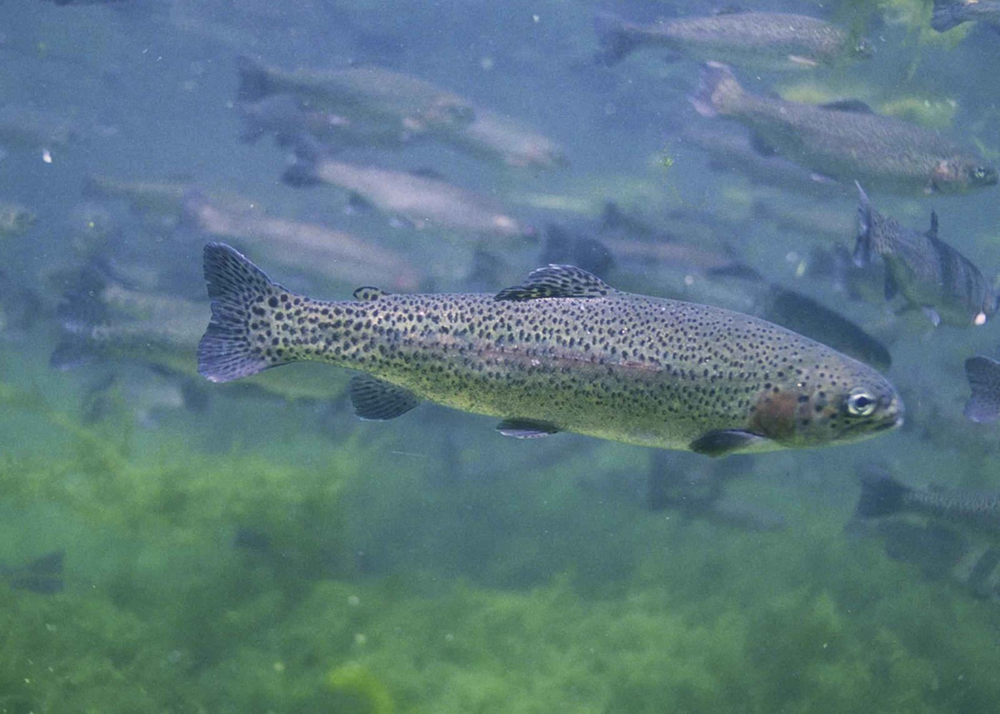

Rozpoznawanie i biologia pstrąga tęczowego
Wygląd i cechy rozpoznawcze
Pstrąg tęczowy ma ciało wrzecionowate, umiarkowanie bocznie ścieśnione, pokryte drobną łuską, oraz tłuszczową płetwę między grzbietową a ogonową — cechę wspólną wszystkich łososiowatych. Najbardziej charakterystyczna jest różowa albo tęczowa smuga biegnąca wzdłuż boku, od pokrywy skrzelowej po nasadę ogona; u ryb w szacie godowej i u samców bywa wyraźnie intensywniejsza, a u okazów z hodowli o jednolitym oświetleniu potrafi być stonowana. Grzbiet jest oliwkowy do stalowoniebieskiego, boki srebrzyste. Całe ciało, płetwa grzbietowa, tłuszczowa i — co najważniejsze diagnostycznie — płetwa ogonowa są gęsto pokryte drobnymi, czarnymi cętkami. W polskich warunkach hodowlanych i w łowiskach komercyjnych najczęściej spotyka się ryby o długości 25–45 cm, choć w sprzyjających warunkach gatunek dorasta znacznie większych rozmiarów.
Jak odróżnić pstrąga tęczowego od potokowego
To rozróżnienie ma bezpośrednie skutki prawne, bo pstrąg potokowy ma krajowy wymiar i okres ochronny, a tęczowy nie jest w rozporządzeniu wymieniony. Najpewniejsza cecha to ubarwienie cętek i ich rozmieszczenie. Pstrąg tęczowy ma cętki wyłącznie czarne, drobne i gęste, rozsiane także na płetwie ogonowej, gdzie często układają się w rzędy. Pstrąg potokowy ma natomiast cętki czerwone lub pomarańczowe otoczone jasną obwódką, rozmieszczone głównie na bokach, a jego płetwa ogonowa jest zasadniczo pozbawiona cętkowania. Druga wskazówka to wspomniana różowa smuga wzdłuż boku — u potokowego jej nie ma. Jeżeli mimo oględzin masz wątpliwość, potraktuj rybę jak gatunek objęty ochroną i wypuść ją; pomyłka w drugą stronę może oznaczać złowienie pstrąga potokowego w okresie ochronnym.
Środowisko, pochodzenie i występowanie w Polsce
Naturalny zasięg gatunku obejmuje zlewiska Pacyfiku w zachodniej Ameryce Północnej, od Alaski po Meksyk. Do Europy trafił w drugiej połowie XIX wieku jako ryba hodowlana i od tego czasu jest rozprowadzany na całym kontynencie. W Polsce podstawą jego obecności są hodowle oraz zarybienia łowisk komercyjnych i wybranych wód krainy pstrąga; gatunek wymaga wody chłodnej, czystej i dobrze natlenionej, najlepiej o wyraźnym przepływie. W większości polskich wód otwartych populacje nie są samopodtrzymujące się — utrzymują się dzięki kolejnym zarybieniom, a nie dzięki regularnemu naturalnemu tarłu. Praktycznie oznacza to, że najpewniej spotkasz go tam, gdzie został wpuszczony: na łowiskach specjalnych, w zbiornikach pstrągowych i na odcinkach rzek objętych programem zarybiania.
Biologia i rozród
W naturalnym zasięgu pstrąg tęczowy odbywa tarło wiosną, orientacyjnie od marca do maja, na żwirowym dnie w wodzie płynącej, gdzie samica wybija w dnie zagłębienie na ikrę. Istnieją też formy wędrowne, znane jako steelhead, które dorastają w morzu i wracają na tarło do rzek. W warunkach polskich rozród odbywa się przede wszystkim w kontrolowanych warunkach hodowlanych, a naturalne tarło w wodach otwartych jest zjawiskiem ograniczonym. Gatunek jest drapieżnikiem oportunistycznym: żywi się bezkręgowcami wodnymi i ich larwami, owadami spadającymi na powierzchnię, skorupiakami, a w miarę wzrostu coraz częściej narybkiem. Ta wszystkożerność przekłada się wprost na skuteczność bardzo różnych metod połowu.
Żerowanie i przepisy
Zwyczaje żerowania według pór roku
Pstrąg tęczowy najlepiej czuje się w wodzie chłodnej i dobrze natlenionej, dlatego jego aktywność rozkłada się inaczej niż u ryb karpiowatych. Wiosną i jesienią, gdy temperatura wody jest umiarkowana, żeruje intensywnie przez większą część dnia. Latem, przy nagrzanej wodzie i spadku natlenienia, aktywność wyraźnie maleje i przenosi się na wczesny ranek oraz wieczór, a ryby szukają miejsc chłodniejszych: dopływów, wypływów, głębszych partii i stref o silniejszym przepływie. Zimą, jeśli łowisko jest czynne, brania bywają dobre — gatunek pozostaje aktywny w wodzie zimnej, choć prezentacja musi być wolniejsza. Na łowiskach komercyjnych rytm żerowania jest dodatkowo kształtowany przez terminy zarybień i porę karmienia.
Przepisy krajowe i zasady lokalne
Przepisy krajowe: Wody śródlądowe: § 6–7 nie wymienia gatunku, więc nie ustanawia krajowego wymiaru ani okresu; decyduje regulamin łowiska. Źródło: Dz.U. 2023 poz. 1373, § 6–7
Granica okresu ochronnego: jeżeli pierwszy lub ostatni dzień okresu przypada w dzień ustawowo wolny od pracy, okres skraca się o ten dzień (§ 7 ust. 2); wyjątkiem jest całoroczna ochrona jesiotra.
Przed połowem: sprawdź aktualny regulamin i zezwolenie dla konkretnej wody. Wymiar, okres, limit lub zakaz lokalny może być ostrzejszy; brak wartości krajowej nie oznacza zgody na zabranie ryby.
Metody połowu
Spinning
Spinning jest najpopularniejszą metodą na tęczowego. Sprawdzają się małe obrotówki, drobne woblery, blaszki wahadłowe i miniaturowe gumy prowadzone w warstwie, w której akurat stoją ryby. Kluczem jest lekki zestaw: wędka o niskim ciężarze wyrzutu, cienka linka i przypon dopasowany do przejrzystości wody. Na łowiskach o dużej presji ryby szybko uczą się rozpoznawać najczęściej używane przynęty, dlatego opłaca się zmiana rozmiaru, koloru i przede wszystkim tempa prowadzenia — często to prędkość, a nie wzór przynęty, decyduje o ataku.
Mucha i metody naturalne
Wędkarstwo muchowe jest w przypadku tego gatunku wyjątkowo skuteczne, bo podstawą jego diety są bezkręgowce. Pracują nimfy prowadzone przy dnie, mokre muchy w toni oraz suche muchy przy wyraźnym żerowaniu na powierzchni. Na łowiskach komercyjnych, gdzie regulamin na to pozwala, popularne są także metody spławikowe i gruntowe z pastą pstrągową, kukurydzą, ikrą lub białym robakiem. Zawsze sprawdź regulamin: część łowisk dopuszcza wyłącznie sztuczne przynęty, a część zabrania przynęt naturalnych ze względu na głębokie zacinanie i związaną z tym śmiertelność wypuszczanych ryb.
Taktyka i obchodzenie się z rybą
Szukaj miejsc, w których woda jest najlepiej natleniona i najchłodniejsza: przy wypływach, dopływach, za progami, na krawędziach nurtu i w cieniu. Po zarybieniu ryby trzymają się zwykle blisko miejsca wpuszczenia i dopiero po kilku dniach rozchodzą się po zbiorniku. Jeśli zamierzasz rybę wypuścić, skróć hol, nie wyjmuj jej z wody dłużej niż to konieczne, używaj podbieraka z siatki bezwęzełkowej i mokrych dłoni, a przy przynętach naturalnych rozważ haczyki bezzadziorowe. Pstrąg tęczowy źle znosi ciepłą wodę, więc latem śmiertelność ryb wypuszczanych rośnie — w upały rozsądniej jest ograniczyć połów niż liczyć na to, że ryba się odratuje.
Kuchnia i ciekawostki
Wartość kulinarna
Pstrąg tęczowy jest jedną z najczęściej spotykanych ryb w polskiej sprzedaży detalicznej właśnie dzięki hodowli. Mięso bywa białe lub łososiowo zabarwione — barwa zależy od paszy, a nie od gatunku czy dzikiego pochodzenia. Najprostsze przygotowania sprawdzają się najlepiej: pieczenie w całości, grillowanie i wędzenie. Jeżeli zabierasz rybę z łowiska, uśmierć ją niezwłocznie i schłodź — to kwestia zarówno jakości mięsa, jak i standardu traktowania zwierząt. Więcej o obchodzeniu się ze złowioną rybą znajdziesz w dziale kuchni.
Ciekawostki
Wędrowna forma gatunku, steelhead, spędza część życia w morzu i wraca do rzek na tarło, osiągając wtedy rozmiary znacznie większe niż formy osiadłe — to ta sama ryba, choć wygląda i zachowuje się inaczej. Nazwa gatunkowa mykiss pochodzi od lokalnego określenia używanego na Kamczatce, gdzie gatunek również występuje naturalnie. Ze względu na skalę światowych introdukcji pstrąg tęczowy bywa wymieniany wśród gatunków obcych o istotnym wpływie na rodzime ekosystemy — w wielu regionach konkuruje z miejscowymi łososiowatymi o pokarm i stanowiska, dlatego zarybienia są dziś prowadzone znacznie ostrożniej niż w XX wieku.
FAQ — najczęstsze pytania
Czy pstrąg tęczowy ma okres ochronny i wymiar?
Nie w przepisie krajowym. Rozporządzenie Dz.U. 2023 poz. 1373 nie wymienia gatunku ani w § 6 (wymiary ochronne), ani w § 7 (okresy ochronne). Zasady wyznacza regulamin łowiska lub zezwolenie okręgu: limity, dozwolone przynęty, godziny i obowiązek zabrania albo wypuszczenia ryby. To odwrotnie niż przy pstrągu potokowym, który ma wymiar 25 albo 30 cm i okres ochronny zależny od odcinka wody.
Jak najszybciej odróżnić tęczowego od potokowego?
Popatrz na płetwę ogonową i na kolor cętek. Tęczowy ma cętki wyłącznie czarne i występują one także na ogonie; do tego biegnie po jego boku różowa smuga. Potokowy ma cętki czerwone lub pomarańczowe w jasnej obwódce, a jego ogon jest zasadniczo bez cętek i nie ma różowej smugi. W razie wątpliwości wypuść rybę: potokowy podlega ochronie, tęczowy nie.
Gdzie w Polsce można złowić pstrąga tęczowego?
Przede wszystkim na łowiskach komercyjnych i specjalnych, które zarybiają ten gatunek, oraz na wybranych odcinkach wód krainy pstrąga objętych zarybianiem. W większości polskich wód otwartych gatunek nie tworzy trwałych, samopodtrzymujących się populacji, więc jego obecność zależy od zarybień. Przed wyjazdem sprawdź komunikaty gospodarza — terminy zarybień są zwykle publikowane i mają na brania większy wpływ niż pogoda.
Na co najlepiej bierze pstrąg tęczowy?
Na małe obrotówki, drobne woblery i blaszki na spinning oraz na nimfy i suche muchy w metodzie muchowej. Tam, gdzie regulamin dopuszcza przynęty naturalne, skuteczne są pasta pstrągowa, ikra, kukurydza i biały robak. Zestaw powinien być lekki, a przypon dopasowany do przejrzystości wody — w klarownym, presjonowanym łowisku to często grubość linki, a nie wybór przynęty, przesądza o liczbie brań.
Źródła i weryfikacja
Prawo: brak gatunku w wykazach krajowych ustalono wprost w treści § 6–7 rozporządzenia Dz.U. 2023 poz. 1373 (źródło sprawdzono 2026-09-02). Zasady połowu wyznacza regulamin łowiska lub zezwolenie okręgu i to on ma pierwszeństwo przed każdym opracowaniem redakcyjnym. Biologia: zasięg naturalny, wymagania środowiskowe, terminy tarła i skład pokarmu za FishBase — Oncorhynchus mykiss. Praktyka redakcyjna: opis metod, taktyki i obchodzenia się z rybą ma charakter edukacyjny i nie jest gwarancją wyniku. Jeśli któraś informacja rozmija się z Twoim doświadczeniem, napisz — poprawki odnotowujemy w rejestrze korekt.
Tożsamość biologiczna i źródła
Nazwa łacińska: Oncorhynchus mykiss. Grupa atlasu: łososiowate i inne. Alias: rainbow trout, tęczak.
Źródła: FishBase: Oncorhynchus mykissGBIF: Oncorhynchus mykiss. Dostęp: 2026-07-17. Zakres: tożsamość taksonomiczna i nazewnictwo oraz, gdy wskazano, ocena ochrony; bez potwierdzenia lokalnego występowania, stanu łowiska ani zasad połowu.
Porównanie taksonomiczne
Porównaj z kartą Pstrąg potokowy. Obie karty prowadzą do osobnych rekordów źródłowych; porównanie nie jest kluczem oznaczania w terenie ani gwarancją wyniku połowu.
Komentarze